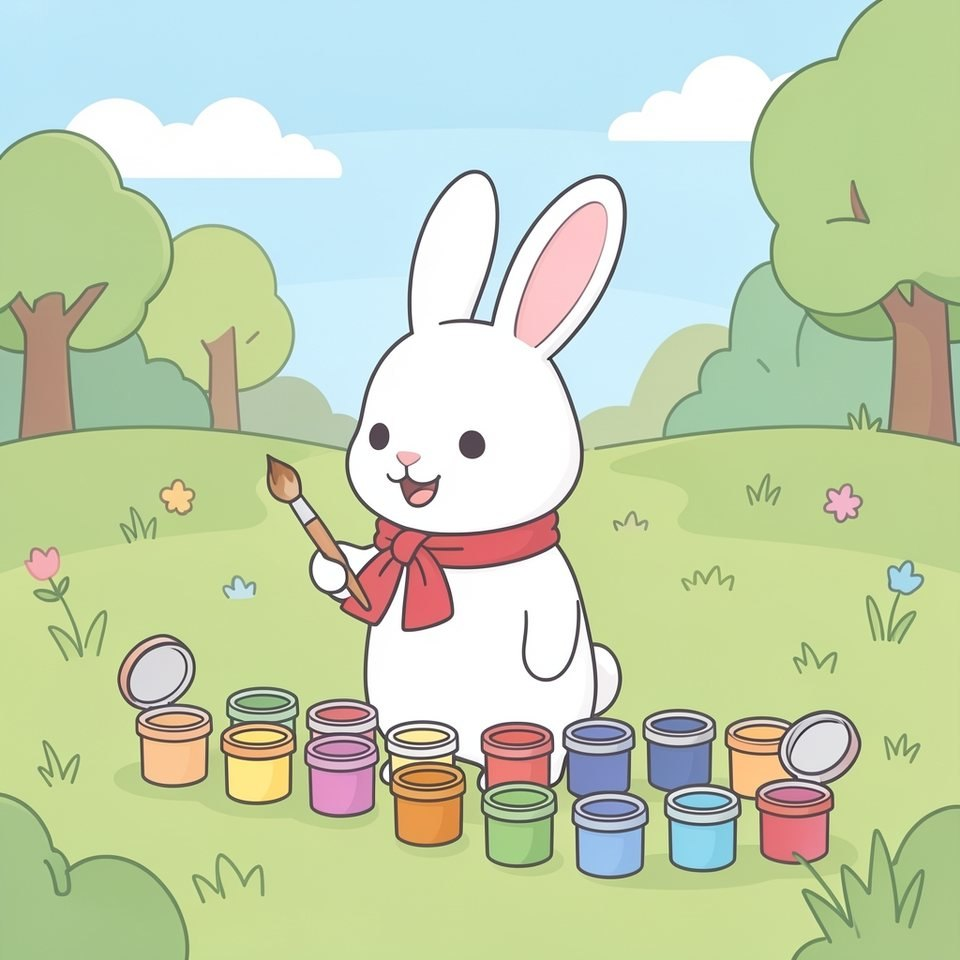

Titistoire › Les Lucioles (1-3 ans)
Rosie et les couleurs
Un imagier pour les tout-petits : les couleurs.

▶ Écouter et regarder l'histoire
Gratuit, sans inscription : la voix lit, le texte suit mot à mot, les images tournent comme dans un album.
Le texte de l'histoire
Rosie a trouvé des pots de peinture. Oh ! Que de couleurs !
Rouge ! Rouge comme la fraise. Miam, miam !
Bleu ! Bleu comme la baleine. Splash !
Jaune ! Jaune comme le poussin. Piou, piou !
Vert ! Vert comme la grenouille. Hop, elle saute !
Orange ! Orange comme la carotte. Croc, croc !
Rose ! Rose comme le petit cochon. Groin, groin !
Violet ! Violet comme le raisin. Un grain, deux grains…
Marron ! Marron comme la châtaigne. Toc, elle tombe !
Noir ! Noir comme le petit chat. Miaou !
Et blanc ? Blanc comme… Rosie ! Au revoir, les couleurs !